How I customized my Nikola-powered site
Contents
1 Installation
First, create a virtualenv
$ mkvirtualenv <venv_name>
Now, install Nikola
$ pip install nikola
There are a lot of optional dependencies, the bulk of which can be installed like this
$ pip install nikola[extras]
If we use a feature that has missing dependencies, we will be informed anyways, so let's just go with a minimal installation and install any dependencies later on as needed.
On Mac OS X, even with XCode installed and fully up-to-date, you may still encounter the following error
In file included from src/lxml/lxml.etree.c:346: $WORKON_HOME/venv_name/build/lxml/src/lxml/includes/etree_defs.h:9:10: fatal error: 'libxml/xmlversion.h' file not found #include "libxml/xmlversion.h" ^ 1 error generated. error: command 'clang' failed with exit status 1
The simple fix is to install lxml by itself first with the STATIC_DEPS set to true, and then try installing Nikola again
$ STATIC_DEPS=true pip install lxml $ pip install nikola
2 Initialization
Now we're ready to initialize the site
$ nikola init <site_root> Creating Nikola Site ==================== This is Nikola v7.3.1. We will now ask you a few easy questions about your new site. If you do not want to answer and want to go with the defaults instead, simply restart with the `-q` parameter. --- Questions about the site --- Site title [My Nikola Site]: Louis Tiao Site author [Nikola Tesla]: Louis Tiao Site author's e-mail [n.tesla@example.com]: louistiao@me.com Site description [This is a demo site for Nikola.]: Computer Science / Math / Software Engineering Site URL [http://getnikola.com/]: http://ltiao.github.io/ --- Questions about languages and locales --- We will now ask you to provide the list of languages you want to use. Please list all the desired languages, comma-separated, using ISO 639-1 codes. The first language will be used as the default. Type '?' (a question mark, sans quotes) to list available languages. Language(s) to use [en]: Please choose the correct time zone for your blog. Nikola uses the tz database. You can find your time zone here: http://en.wikipedia.org/wiki/List_of_tz_database_time_zones Time zone [Australia/Sydney]: Current time in Australia/Sydney: 23:03:16 Use this time zone? [Y/n] Y --- Questions about comments --- You can configure comments now. Type '?' (a question mark, sans quotes) to list available comment systems. If you do not want any comments, just leave the field blank. Comment system: ? # Available comment systems: # disqus, facebook, googleplus, intensedebate, isso, livefyre, muut Comment system: disqus You need to provide the site identifier for your comment system. Consult the Nikola manual for details on what the value should be. (you can leave it empty and come back later) Comment system site identifier: ltiao That's it, Nikola is now configured. Make sure to edit conf.py to your liking. If you are looking for themes and addons, check out http://themes.getnikola.com/ and http://plugins.getnikola.com/. Have fun! [2015-03-15T12:03:26Z] INFO: init: Created empty site at ltiao.github.io.
Note that this also works on an existing directory [1], so you can create a repository on Github (which conveniently generates README, LICENSE, .gitignore files for you), clone it into <site_root>, and then execute the above initialization command. Or you can initialize the site first, and then initialize the git repository. Whatever tickles your fancy.
3 Create Demo Posts
Similar to Octopress, but unlike Pelican [2], Nikola provides you with commands for post and page creation
$ nikola help new_post Purpose: create a new blog post or site page Usage: nikola new_post [options] [path] Options: -p, --page Create a page instead of a blog post. (see also: `nikola new_page`) -t ARG, --title=ARG Title for the post. -a ARG, --author=ARG Author of the post. --tags=ARG Comma-separated tags for the post. -1 Create the post with embedded metadata (single file format) -2 Create the post with separate metadata (two file format) -e Open the post (and meta file, if any) in $EDITOR after creation. -f ARG, --format=ARG Markup format for the post, one of rest, markdown, wiki, bbcode, html, textile, txt2tags -s Schedule the post based on recurrence rule -i ARG, --import=ARG Import an existing file instead of creating a placeholder $ nikola help new_page Purpose: create a new page in the site Usage: nikola new_page [options] [path] Options: -t ARG, --title=ARG Title for the page. -a ARG, --author=ARG Author of the post. -1 Create the page with embedded metadata (single file format) -2 Create the page with separate metadata (two file format) -e Open the page (and meta file, if any) in $EDITOR after creation. -f ARG, --format=ARG Markup format for the page, one of rest, markdown, wiki, bbcode, html, textile, txt2tags -i ARG, --import=ARG Import an existing file instead of creating a placeholder
Let's go ahead and create a new post. I mostly care about how code blocks, mathematical expressions and other ReStructuredText extensions appear, so let's create a post with these syntax contructs. A good starting point is the reStructuredText Demonstration. Download the source as a .txt file and use it as as starting point for our new post
$ nikola new_post --title="ReStructuredText Demo" --import=demo.txt Importing Existing Post ----------------------- Title: ReStructuredText Demo Scanning posts....done! [2015-03-16T04:01:39Z] INFO: new_post: Your post's text is at: posts/restructuredtext-demo.rst
Note that some metadata is generated for us at the top, along with the contents of demo.txt
.. title: ReStructuredText Demo .. slug: restructuredtext-demo .. date: 2015-03-16 02:02:07 UTC+11:00 .. tags: .. category: .. link: .. description: .. type: text ...
For the most part, this looks pretty good.
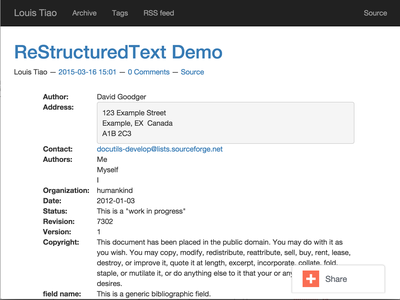{kind=link}
There's something funky going on with the footnotes and citations
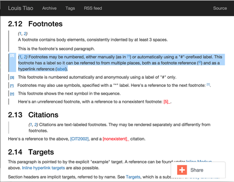{kind=link}
It appears some the text color of some citations are white; they become visible when we highlight it.
Obviously, we haven't included the images corresponding to the demo, or even set up our images directory yet.
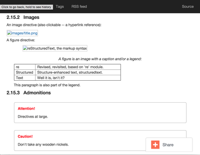{kind=link}
So let's go ahead and do just that.
3.1 Images
The default image-related options in conf.py are as follows
# ############################################################################# # Image Gallery Options # ############################################################################# # One or more folders containing galleries. The format is a dictionary of # {"source": "relative_destination"}, where galleries are looked for in # "source/" and the results will be located in # "OUTPUT_PATH/relative_destination/gallery_name" # Default is: GALLERY_FOLDERS = {"galleries": "galleries"} # More gallery options: THUMBNAIL_SIZE = 180 MAX_IMAGE_SIZE = 1280 USE_FILENAME_AS_TITLE = True EXTRA_IMAGE_EXTENSIONS = [] # If set to False, it will sort by filename instead. Defaults to True GALLERY_SORT_BY_DATE = True # Folders containing images to be used in normal posts or # pages. Images will be scaled down according to IMAGE_THUMBNAIL_SIZE # and MAX_IMAGE_SIZE options, but will have to be referenced manually # to be visible on the site. The format is a dictionary of {source: # relative destination}. IMAGE_FOLDERS = {'images': ''} IMAGE_THUMBNAIL_SIZE = 400
So let's create an images directory, and a subdirectory for the images related to our demo
$ mkdir <site_root>/images $ mkdir <site_root>/images/rest_demo
Next, download the images in http://docutils.sourceforge.net/docs/user/rst/images/ and place them in the subdirectory we just created
$ wget -nd -r -l 1 -P images/rest_demo/ -A jpeg,jpg,png,bmp,gif http://docutils.sourceforge.net/docs/user/rst/images/
In the posts/restructuredtext-demo.rst file, we must now update all occurrences of images/ to ../rest_demo/.
Now we should see
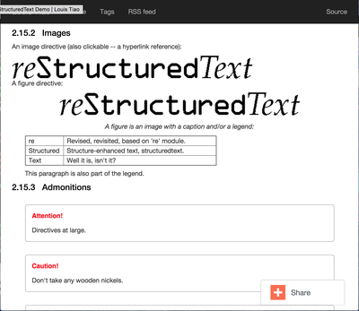{kind=link}
To reference the contents of the images directory within our post, we use ../, since the images and its thumbnails are outputted to to the output directory by default. Since our posts are outputted to output/posts, it makes sense that we reference the parent directory.
If we update the IMAGE_FOLDERS setting to
IMAGE_FOLDERS = {'images': 'images'}
the images will be outputted to output/images, (which makes more sense in my opinion.) But now, we must remember to update ../rest_demo/ to ../images/rest_demo/!
3.2 Extensions
Now let's check out some of the directives and roles that are not part of Docutils but are supported by Nikola.
3.2.1 Code Blocks
The code directive has been part of Docutils since version 0.9 and two aliases, code-block and sourcecode are also supported.
Let's add the following code block to the demo and see how it looks:
.. code-block:: python
:number-lines:
def sieve_of_eratosthenes():
factors = defaultdict(set)
for n in count(2):
if factors[n]:
for m in factors.pop(n):
factors[n+m].add(m)
else:
factors[n*n].add(n)
yield n
Seems to look alright.
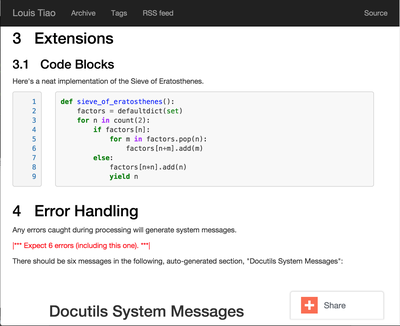{kind=link}
For any theme that uses Pygments (e.g. the default themes), we can modify the color scheme to any one of
- autumn
- borland
- bw
- colorful
- default
- emacs
- friendly
- fruity
- manni
- monokai
- murphy
- native
- pastie
- perldoc
- rrt
- tango
- trac
- vim
- vs
You can use Pygments online demo to see how each of these styles look.
# Color scheme to be used for code blocks. If your theme provides # "assets/css/code.css" this is ignored. # Can be any of autumn borland bw colorful default emacs friendly fruity manni # monokai murphy native pastie perldoc rrt tango trac vim vs CODE_COLOR_SCHEME = 'default'
Obviously (and as noted in the comments), if you provide your own assets/css/code.css, this setting will have no effect. (If you want to dig in to the asset-copying mechanism, take a look at copy_assets.py.)
If you did dive in to that file, you'll probably notice that you have access to more color schemes than just those listed above. To list your available styles, run:
>>> from pygments.styles import get_all_styles >>> sorted(list(get_all_styles())) ['autumn', 'borland', 'bw', 'colorful', 'default', 'emacs', 'friendly', 'fruity', 'igor', 'manni', 'monokai', 'murphy', 'native', 'paraiso-dark', 'paraiso-light', 'pastie', 'perldoc', 'rrt', 'tango', 'trac', 'vim', 'vs', 'xcode']
Let's go ahead and check out xcode.
CODE_COLOR_SCHEME = 'xcode'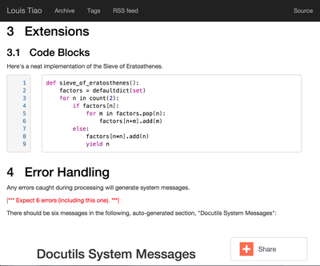
{kind=link}
In the end, I still think default looks best so I stuck with it.
3.2.2 MathJax
The next thing I care most about is how mathematical expressions are rendered. Mathematical expressions can be displayed inline using the math role:
While displaying equations look good for a page of samples, the
ability to mix math and text in a paragraph is also important.
This expression :math:`\sqrt{3x-1}+(1+x)^2` is an example of an
inline equation. As you see, MathJax equations can be used this
way as well, without unduly disturbing the spacing between lines.
while equations can be displayed with the math directive:
Here are some remarkable equations
An Identity of Ramanujan
************************
.. math::
\frac{1}{(\sqrt{\phi \sqrt{5}}-\phi) e^{\frac25 \pi}} =
1+\frac{e^{-2\pi}} {1+\frac{e^{-4\pi}} {1+\frac{e^{-6\pi}}
{1+\frac{e^{-8\pi}} {1+\ldots} } } }
Maxwell's Equations
*******************
.. math::
\nabla \times \vec{\mathbf{B}} -\, \frac1c\, \frac{\partial\vec{\mathbf{E}}}{\partial t} & = \frac{4\pi}{c}\vec{\mathbf{j}} \\
\nabla \cdot \vec{\mathbf{E}} & = 4 \pi \rho \\
\nabla \times \vec{\mathbf{E}}\, +\, \frac1c\, \frac{\partial\vec{\mathbf{B}}}{\partial t} & = \vec{\mathbf{0}} \\
\nabla \cdot \vec{\mathbf{B}} & = 0
Let's see what we get
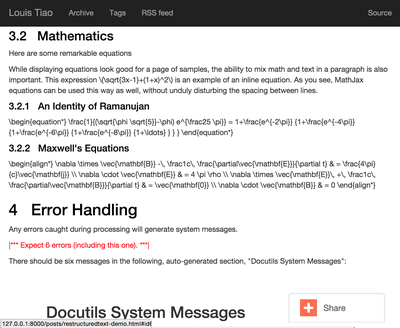{kind=link}
Oops... That's not what we want. Turns out, we forgot to add the mathjax tag to the post's tags metadata:
.. title: ReStructuredText Demo .. slug: restructuredtext-demo .. date: 2015-03-16 15:01:39 UTC+11:00 .. tags: mathjax .. category: .. link: .. description: .. type: text
Now we're in business.
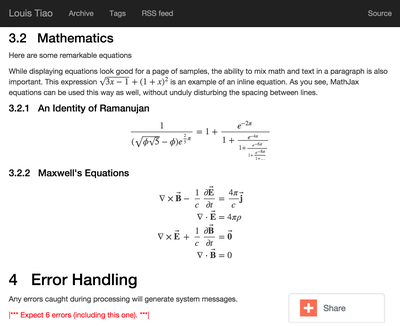{kind=link}
Note that these examples were ripped off from http://cdn.mathjax.org/mathjax/latest/test/sample.html.
3.2.3 Doc
I'm not that fussy about the other roles and directives, and I doubt I will need to use them very much. The last one that I will really need is the doc role, which allows you to link to other pages and articles.
Let's add a link to this post in our demo post:
This post is a demo for :doc:`how-i-customized-my-nikola-powered-site`.
This will use the post's title as the link's text. Alternatively, we can define our own text:
This post is a demo for :doc:`my interesting post <how-i-customized-my-nikola-powered-site>`.
You can see the demo post here.
3.3 IPython Notebooks
Support for writing content IPython Notebooks is a big deal for me, and is the whole reason I switched to Nikola. Unlike Pelican, Nikola support for IPython Notebooks is built in, and there's no need to mess around with all the hacky plugins that Pelican requires.
First, let's add *.ipynb files as a source format
POSTS = ( ("posts/*.rst", "posts", "post.tmpl"), ("posts/*.txt", "posts", "post.tmpl"), ("posts/*.ipynb", "posts", "post.tmpl"), )
Otherwise you'll encounter the exception:
Exception: Can't find a way, using your configuration, to create a post in format ipynb. You may want to tweak COMPILERS or POSTS in conf.py
Now let's create some example notebooks, starting with the sample notebook for demonstrating IPython's Rich Display System and Typesetting Equations:
$ nikola new_post --title="IPython Notebook Demo" --format=ipynb --import=Display\ System.ipynb Importing Existing Post ----------------------- Title: IPython Notebook Demo Scanning posts.....done! [2015-03-16T10:54:19Z] WARNING: new_post: This compiler does not support one-file posts. [2015-03-16T10:54:19Z] INFO: new_post: Your post's metadata is at: posts/ipython-notebook-demo.meta [2015-03-16T10:54:19Z] INFO: new_post: Your post's text is at: posts/ipython-notebook-demo.ipynb
This looks promising, but it doesn't have the nice In [#] / Out [#] formatting we're so used to seeing from IPython. Also, the tables look a bit condensed.
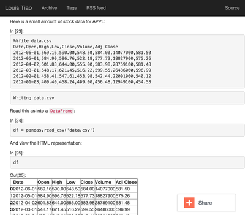{kind=link}
The MathJax equations are also problematic
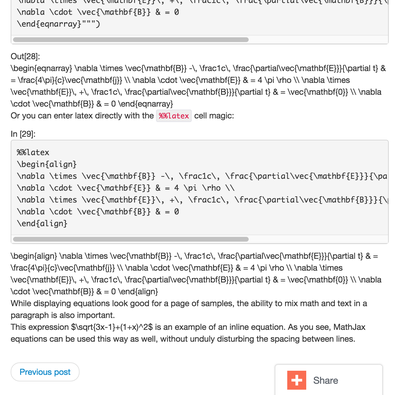{kind=link}
Luckily, this is easily fixed by installing the ipython theme.
To see the list of available themes from the default repository, run:
$ nikola install_theme --list INFO:requests.packages.urllib3.connectionpool:Starting new HTTP connection (1): themes.getnikola.com Themes: ------- blogtxt bootstrap3-gradients bootstrap3-gradients-jinja ipython ipython-xkcd monospace oldfashioned planetoid readable reveal reveal-jinja zen zen-ipython zen-jinja
Note that the default themes such as bootstrap3 are shipped with Nikola and lives in $WORKON_HOME/<venv_name>/lib/python2.7/site-packages/nikola/data/themes/.
Let's just go ahead and install ipython:
$ nikola install_theme ipython INFO:requests.packages.urllib3.connectionpool:Starting new HTTP connection (1): themes.getnikola.com [2015-03-16T11:07:25Z] INFO: install_theme: Downloading 'http://themes.getnikola.com/v7/ipython.zip' INFO:requests.packages.urllib3.connectionpool:Starting new HTTP connection (1): themes.getnikola.com [2015-03-16T11:07:26Z] INFO: install_theme: Extracting 'ipython' into themes/ [2015-03-16T11:07:26Z] NOTICE: install_theme: Remember to set THEME="ipython" in conf.py to use this theme.
This creates the directory themes in under <site_root>. Let's now set this as our theme (conf.py):
# Name of the theme to use. THEME = "ipython"
That's better.
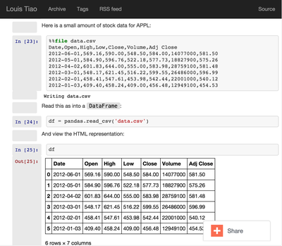 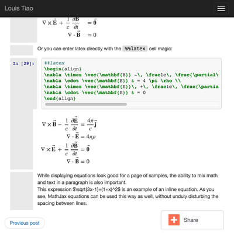{kind=link}
{kind=link}
But wait! The inline math expressions are still not rendered correctly. To fix this, we need to set the MATHJAX_CONFIG (in conf.py):
# If you are using the compile-ipynb plugin, just add this one: MATHJAX_CONFIG = """ <script type="text/x-mathjax-config"> MathJax.Hub.Config({ tex2jax: { inlineMath: [ ['$','$'], ["\\\(","\\\)"] ], displayMath: [ ['$$','$$'], ["\\\[","\\\]"] ], processEscapes: true }, displayAlign: 'left', // Change this to 'center' to center equations. "HTML-CSS": { styles: {'.MathJax_Display': {"margin": 0}} } }); </script> """
And with that, we seem to be in a good way.
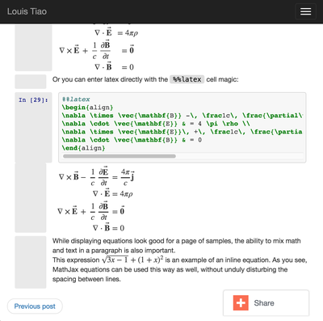{kind=link}
You can see the demo post here.
4 Deployment
At this point, I'm assuming your Git repository is initialized but nothing has been commited yet. If this is not the case, you should consider starting a fresh repository, unless you really know what you are doing.
4.1 Github Pages
Since we're using a Github User / Organization page, the output of the site must be pushed to the master branch. But we still need to track our sources. So first we create a source branch. Note that by default, Nikola assumes the branch to be named deploy, but I find that kind of confusing.
$ git checkout -b source
# For user.github.io OR organization.github.io pages, the DEPLOY branch # MUST be 'master', and 'gh-pages' for other repositories. GITHUB_SOURCE_BRANCH = 'source' GITHUB_DEPLOY_BRANCH = 'master' # The name of the remote where you wish to push to, using github_deploy. # GITHUB_REMOTE_NAME = 'origin'
Now, let's track and commit the relevant source files, which so far is just posts/, images/, conf.py.
$ echo .DS_Store >> .gitignore $ echo .ipynb_checkpoints >> .gitignore $ git add conf.py images/ posts/ $ git commit -a -m 'initial commit'
And we should push it to Github:
$ git push origin source Counting objects: 40, done. Delta compression using up to 4 threads. Compressing objects: 100% (21/21), done. Writing objects: 100% (21/21), 2.64 MiB | 264.00 KiB/s, done. Total 21 (delta 2), reused 0 (delta 0) To https://github.com/ltiao/ltiao.github.io.git * [new branch] source -> source
We're also ready to deploy to Github Pages:
$ nikola github_deploy Scanning posts.....done! Scanning posts.....done! [2015-03-16T13:05:50Z] INFO: github_deploy: ==> ['ghp-import', '-n', '-m', u'Nikola auto commit.\n\nSource commit: 708c86073cf740997166eacfdb65851acfa74b9d\nNikola version: 7.3.1', '-p', '-r', u'origin', '-b', u'master', u'output'] Counting objects: 144, done. Delta compression using up to 4 threads. Compressing objects: 100% (70/70), done. Writing objects: 100% (143/143), 5.24 MiB | 570.00 KiB/s, done. Total 143 (delta 69), reused 143 (delta 69) To https://github.com/ltiao/ltiao.github.io.git f8605ee..e159dec master -> master
Caution!
The nikola github_deploy doesn't seem to generate the required thumbnails for the thumbnail directive.
5 Theme Customization
This is optional, but since I want to be able to distribute my custom theme, and also reuse it in other projects, I created a new repository on Github, and chose the Sass option for the .gitignore file. Next I clone it into <site_root>/themes.
Now, let's create a new theme based on ipython using the Bootswatch theme yeti (which is basically the default Foundation look implemented in Bootstrap.)
$ nikola help bootswatch_theme Purpose: given a swatch name from bootswatch.com and a parent theme, creates a custom theme Usage: nikola bootswatch_theme [options] Options: -n ARG, --name=ARG New theme name (default: custom) -s ARG Name of the swatch from bootswatch.com. -p ARG, --parent=ARG Parent theme name (default: bootstrap3) $ nikola bootswatch_theme --name=tiao --parent=ipython -s yeti
Caution!
You're likely to encounter the exception:
SSLError: hostname 'bootswatch.com' doesn't match either of 'ssl2000.cloudflare.com', 'cloudflare.com', '*.cloudflare.com'
The quick fix if you're desperate to get up and running is to add the keyword argument verify=False to the call to the get method on line 100 of bootswatch_theme.py. But for the sake of security, you'd better wait for this to be fixed.
Note
I'd much prefer it if we could specify a Bootswatch theme in the configuration file since it wouldn't be too difficult to support. As it is, we must create a custom theme if we want to use a different Bootswatch theme.
Now we can set our theme to tiao.
THEME = 'tiao'
and we should now see a yeti version of our site.
I don't think navigation bars are well-suited personal websites and blogs, and that's the main thing I want to address with my custom theme.
To do this, we must modify the base template base.tmpl. Let's first copy it from the parent and take it from there. You'll note that ipython does not actually have a base.tmpl, it uses its parent's, namely bootstrap3-jinja.
$ ls themes/ipython/templates/ base_helper.tmpl index.tmpl post.tmpl $ cat themes/ipython/parent bootstrap3-jinja $ mkdir themes/tiao/templates $ cp $WORKON_HOME/<venv_name>/lib/python2.7/site-packages/nikola/data/themes/bootstrap3-jinja/templates/base.tmpl themes/tiao/templates/base.tmpl
Now we replace every between <!-- Menubar --> ... <!-- End of Menubar --> with
<div class="container"> <div class="page-header"> <ul class="nav nav-pills pull-right"> {% if search_form %} <li>{{ search_form }}</li> {% endif %} {% block belowtitle %} {% if translations|length > 1 %} <li>{{ base.html_translations() }}</li> {% endif %} {% endblock %} {% if show_sourcelink %} {% block sourcelink %}{% endblock %} {% endif %} {{ template_hooks['menu_alt']() }} </ul> <a href="{{ abs_link(_link("root", None, lang)) }}"> {% if logo_url %} <img src="{{ logo_url }}" alt="{{ blog_title }}" id="logo"> {% endif %} <h2 class="text-muted"> {% if show_blog_title %} <span id="blog-title"><strong>{{ blog_title }}</strong></span> {% endif %} </h2> </a> </div> <!-- ./page-header --> </div> <!-- ./container -->
We also replace the body by
<div class="container" id="content" role="main"> <div class="row"> <div class="col-sm-3 col-md-2"> <ul class="nav nav-pills nav-stacked"> {{ base.html_navigation_links() }} {{ template_hooks['menu']() }} </ul> </div> <!-- ./col --> <div class="col-sm-9 col-md-10"> <div class="body-content"> <!--Body content--> <div class="row"> {{ template_hooks['page_header']() }} {% block content %}{% endblock %} </div> <!--End of body content--> </div> </div> <!-- ./col --> </div> <!-- ./row --> </div> <!-- ./container --> <footer> <div class="container"> {{ content_footer }} {{ template_hooks['page_footer']() }} </div> </footer>
and lastly create assets/css/custom.css, add
html { position: relative; min-height: 100%; } body { margin-top: 5px; /* Margin bottom by footer height */ margin-bottom: 60px; } .footer { position: absolute; bottom: 0; width: 100%; /* Set the fixed height of the footer here */ height: 60px; background-color: #f5f5f5; } .footer .text-muted { margin: 20px 0; }
What this does is summarized below:
- Created a page header in place of the navigation bar
- Reduce the top margin to 5 pixels
- Created a sidebar to contain all the navigation links, i.e. the main menu.
- Created navigation pills, pulled to the right on the page header, which contains the search form, source link and translation links, i.e. the alt menu.
- Stick the footer to the bottom, loosely based on the Bootstrap Sticky footer example and its corresponding CSS file.
6 Tweaks
6.1 Tags and Categories
By default, TAG_PATH = "categories" and CATEGORY_PATH = "categories", which means that tags and categories are displayed on the same page. Furthermore, pages for both tags and categories are outputted to the same directory, so category pages must always be prefixed and the default is cat_.
To separate tags from categories, I set TAG_PATH = "tags" (which IMHO is what the default ought to be), leave CATEGORY_PATH = "categories" and get rid of the categories prefix CATEGORY_PREFIX = "".
Finally, pages for both tags and categories will simply contain a list of links. For me personally, I like this behavior for tags, but I would like for category pages to contain the post themselves. So we can leave the default TAG_PAGES_ARE_INDEXES = False and set CATEGORY_PAGES_ARE_INDEXES = True. This is summarized below.
# Paths for different autogenerated bits. These are combined with the # translation paths. # Final locations are: # output / TRANSLATION[lang] / TAG_PATH / index.html (list of tags) # output / TRANSLATION[lang] / TAG_PATH / tag.html (list of posts for a tag) # output / TRANSLATION[lang] / TAG_PATH / tag.xml (RSS feed for a tag) TAG_PATH = "tags" # If TAG_PAGES_ARE_INDEXES is set to True, each tag's page will contain # the posts themselves. If set to False, it will be just a list of links. # TAG_PAGES_ARE_INDEXES = False # Final locations are: # output / TRANSLATION[lang] / CATEGORY_PATH / index.html (list of categories) # output / TRANSLATION[lang] / CATEGORY_PATH / CATEGORY_PREFIX category.html (list of posts for a category) # output / TRANSLATION[lang] / CATEGORY_PATH / CATEGORY_PREFIX category.xml (RSS feed for a category) CATEGORY_PATH = "categories" CATEGORY_PREFIX = "" # If CATEGORY_PAGES_ARE_INDEXES is set to True, each category's page will contain # the posts themselves. If set to False, it will be just a list of links. CATEGORY_PAGES_ARE_INDEXES = True
This is one things that make Nikola great - the degree of control you have over how your site is rendered.
6.3 Google Analytics
# Google Analytics or whatever else you use. Added to the bottom of <body> # in the default template (base.tmpl). # (translatable) BODY_END = """ <script> (function(i,s,o,g,r,a,m){i['GoogleAnalyticsObject']=r;i[r]=i[r]||function(){ (i[r].q=i[r].q||[]).push(arguments)},i[r].l=1*new Date();a=s.createElement(o), m=s.getElementsByTagName(o)[0];a.async=1;a.src=g;m.parentNode.insertBefore(a,m) })(window,document,'script','//www.google-analytics.com/analytics.js','ga'); ga('create', <TRACKING_ID>, 'auto'); ga('send', 'pageview'); </script> """
6.5 Favicons
I created a favicon in a bunch of different sizes and placed them in files/ to be copied to output/ by the copy_files task. The relevant conf.py settings are shown below
# FAVICONS contains (name, file, size) tuples. # Used for create favicon link like this: # <link rel="name" href="file" sizes="size"/> FAVICONS = { ("icon", "/favicon_16x16.ico", "16x16"), ("icon", "/favicon_32x32.ico", "32x32"), ("icon", "/favicon_256x256.ico", "256x256"), }
6.10 Stories are Pages
One thing that peeved me was that pages are frequently referred to as stories throughout the documentation and configuration file. Calling it stories doesn't even make much sense, but calling it two things makes it even more confusing.
For example,
PAGES = ( ("stories/*.rst", "stories", "story.tmpl"), ("stories/*.txt", "stories", "story.tmpl"), )
So pages are in the stories directory and use the story.tmpl template? Why not just call it pages!
PAGES = ( ("pages/*.rst", "pages", "story.tmpl"), ("pages/*.txt", "pages", "story.tmpl"), )
I left the template file as is because I couldn't be bothered with template inheritance at this point. But now, at least the pages are outputted to the pages/ directory, which is reflected in the URL for pages, and that is what I care about the post. I also changed the input directory to pages/ for consistency.
6.11 Languages
| [1] | Unlike the initialization commands of more prominent projects, such as Django (django-admin.py startproject), Scrapy (scrapy startproject) and probably others. |
| [2] | Admittedly not a huge predicament since one can trivially implement such a command in Pelican, given that projects come equipped with a fabfile.py and a Makefile, that makes extensive use of it. |
Comments
Comments powered by Disqus